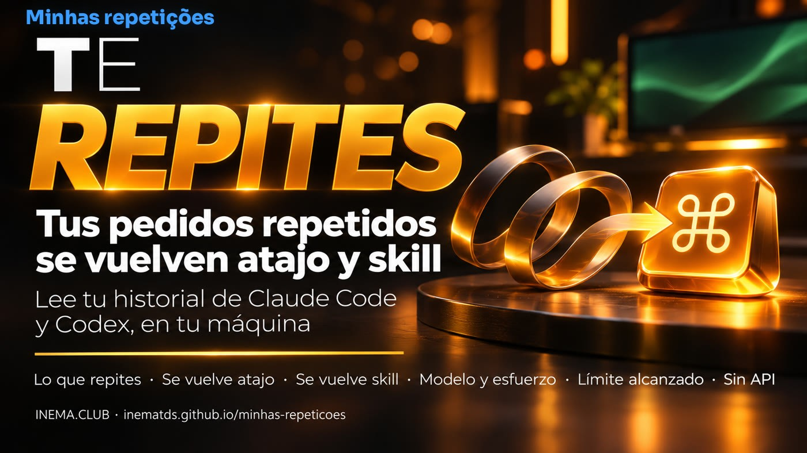

Cada pedido repetido parece el primero, por eso no te das cuenta y vuelves a pagar con tiempo y límite de uso. Descubre qué se convierte en atajo, qué se convierte en skill (un paso a paso que la IA sigue por sí sola) y qué ni siquiera debería ser necesario pedir.

Quienes trabajan con agentes de IA piden las mismas cosas muchas veces y no se dan cuenta, porque cada vez parece la primera. Minhas repetições es un kit gratuito que lee el historial de Claude Code y Codex guardado en tu computadora y muestra qué repites más. Para cada repetición, indica si conviene convertirla en un atajo (un texto corto que pegas con un disparador), una skill (un procedimiento con pasos que sigue el agente) o si basta con una respuesta como "sí". Para usarlo solo necesitas Python 3: no llama a ninguna API y nada sale de tu máquina.
Ejecutamos el kit en una máquina de producción de ARCKHÉ, donde agentes de IA hacen videos, guías y publicaciones todos los días (30 días hasta el 15/11/2026). Solo recuentos: ningún texto sale de la computadora. "Turno" es cada vez que la IA trabaja en una ronda.
pedidos escritos por una persona en el mes
eran repetición (el mismo pedido 3 veces o más)
"cuál es la situación": el campeón. Sumando "qué está en marcha" y similares, 80 verificaciones
turnos hechos por robots (agentes que funcionan solos, sin que nadie escriba): casi 6 por cada pedido escrito
Opus 5.5 y Fable 5.2 son dos modelos de Claude: Opus es el más rápido, Fable es el más grande (piensa más, consume más). Codex es el agente de OpenAI.
El «esfuerzo» (cuánto piensa el modelo antes de actuar) se mantuvo en el nivel medio en casi todas las solicitudes que registran el esfuerzo. La suscripción alcanzó el límite de uso 6 veces en Claude y 10 veces en Codex. El 10% de las rondas de Opus 5.5 superó los 10 minutos.
El kit separa cada grupo de pedidos repetidos en estos cuatro tipos (más dos de apoyo: enlace pegado y comando que ya usas). La diferencia está en el tamaño, los pasos y lo que busca el pedido (cómo usar ↓).
Pedido corto y siempre igual, como "publica en el portal". Escribes un activador corto (el kit sugiere ;portal-publica) y aparece el texto. El kit ya entrega la lista lista.
Pedido largo, con pasos ("crea el repo, ejecuta las pruebas, prepara la guía, publica"). Se convierte en un procedimiento que el agente sigue siempre de la misma manera. El kit entrega el borrador.
"sí", "continúa", "puedes hacerlo". No cuenta como atajo. Si aparece demasiado, el agente está preguntando demasiado.
"¿cuál es la situación?" repetido 68 veces no necesita un atajo: necesita un aviso al final, una barra de estado o un panel. El kit marca esos grupos y no genera atajos para ellos.
Los 12 consejos completos están en el kit (DICAS.md). Los que más cambian el día a día:
Empieza con el modelo más grande (en Claude, el Fable) cuando todavía no sabes qué camino tomar. Con el plan claro, cambia al más rápido (el Opus) y ejecuta.
Si el modelo piensa demasiado para la tarea, lo que lo resuelve es el nivel de esfuerzo (una configuración de cuánto piensa), no una frase en el pedido.
Los cambios medianos o grandes pasan a otro agente para que los revise, preferentemente de otra empresa (por ejemplo, Codex revisando lo que hizo Claude).
Un script revisa primero; la IA solo interviene cuando encuentra un problema. Una ejecución sin problemas no cuesta nada.
Un criterio de finalización escrito y "Terminé: …" al final sacan el "¿cuál es la situación?" de tu día.
El número que importa es la caída de tus repeticiones después de los atajos y las skills.
De aquí en adelante está la parte técnica: instalar, ejecutar y leer el informe. Tú no necesitas de esta parte para entender lo que está arriba.
repeticoes.py lee los registros que Claude Code y Codex ya guardan en tu computadora y escribe un informe.
Biblioteca estándar de Python. No llama a ninguna API, no instala nada ni envía nada afuera.
Los robots, monitores, notificaciones y subagentes quedan fuera del cálculo (y aparecen por separado). Una sesión reanudada no se cuenta dos veces.
"cuál situacion" y "¿cuál es la situación?" caen en el mismo grupo; "publica", "publique" y "publicó" también.
Cada etapa tarda segundos; 11 mil sesiones llevaron cerca de 1 minuto.
Nada más.
Ya viene incluido en Linux. En Mac puede pedir las herramientas de línea de comandos; en Windows usa py en lugar de python3.
python3 --versionEstá en ~/.claude/projects e ~/.codex/sessions. Basta con haberlo usado.
ls ~/.claude/projects | headExpansor de texto libre para usar los atajos generados. Cualquier otro sirve.
# espanso.orgComandos reales del kit.
Un repositorio público, un archivo principal.
git clone https://github.com/linnoff88-dev/minhas-repeticoes cd minhas-repeticoes
15 pruebas con un historial inventado (ningún dato tuyo).
python3 -m unittest discover -s testes # Ran 15 tests ... OK
Predeterminado: últimos 30 días, carpetas predeterminadas de Claude Code y Codex.
python3 repeticoes.py # 2287 pedidos tuyos · 12.6% repetidos · 6 atajos · 3 skills · 73s → relatorio/relatorio.html python3 repeticoes.py --dias 7 --saida semana # otra ventana python3 repeticoes.py --sem-codex # solo Claude Code
Gráficos de repetición, grupos, modelo, esfuerzo, límite y turnos largos. Se abre en el navegador, sin internet.
xdg-open relatorio/relatorio.html # en Mac: open
Cada pedido corto repetido se convierte en un activador (las verificaciones quedan fuera). Revísalo antes de copiar. En Mac la carpeta es ~/Library/Application Support/espanso/match/.
cat relatorio/atalhos-espanso.yml cp relatorio/atalhos-espanso.yml ~/.config/espanso/match/repeticoes.yml
Cada borrador incluye 3 ejemplos de cómo lo pediste. Escribe los pasos, convierte lo que cambia en un argumento y pásalo a tus skills. O instala la skill del kit y pídele al agente que lo haga contigo.
ls relatorio/skills-rascunho/ mkdir -p ~/.claude/skills cp -r skill/minhas-repeticoes ~/.claude/skills/ cp repeticoes.py DICAS.md ~/.claude/skills/minhas-repeticoes/ # después, en el agente: "¿qué repito?"
Compara los dos numeros.json: es el único archivo sin ningún texto tuyo.
python3 repeticoes.py --saida relatorio-mes2
Con el historial inventado de las pruebas (exemplos/relatorio-inventado/). El informe sale en portugués. Solo numeros.json se puede mostrar a alguien; el resto contiene fragmentos de tus pedidos.
1. 5× checagem — qual situacao 2. 4× atalho — publica no portal 3. 3× resposta — sim 4. 3× ja-e-atalho — /prime 5. 3× skill — crie o repo deste conteúdo, escreva o README..., publique no portal
matches: - trigger: ";portal-publica" replace: "publica no portal"
Lo que existe hoy y lo que puede venir.